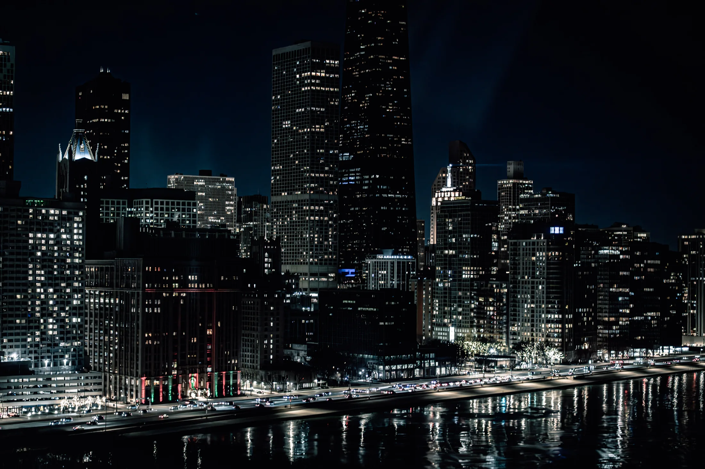

Cover the room, not just the obvious moments.
Event photography that catches people, details, reactions and atmosphere so the final set feels like a night instead of a checklist.
Big moments matter. So do the in-between ones.
The room changes all night. Coverage is built around the people and details that explain the event after it is over.
People
Posed frames when they make sense, plus candid reactions and interaction.
Details
Visual pieces that establish the event, venue and work that went into it.
Atmosphere
Wide context and available light that keep the final set connected to the room.

Give me the timeline and what cannot be missed.
For events, include the venue, approximate coverage window and the parts of the night that matter most. That makes the quote useful instead of generic.
Pricing: Custom quote. Delivery timing is confirmed with the event scope.
Start Event RequestUseful details before the event.
What should I include in the booking request?
The venue, date, approximate coverage window and any must-have moments or people are the most useful starting points.
Can you photograph an event in low light?
Yes. Low-light and nightlife conditions are already part of the Hynoe Flicks portfolio.
How many photos will I get?
The delivered scope is confirmed before booking because coverage length and event needs vary. The site does not invent a photo count before those details are known.
Give the event a set that still feels alive tomorrow.
Start with the date, venue and coverage needs. The rest gets shaped from there.
Book Event Photography